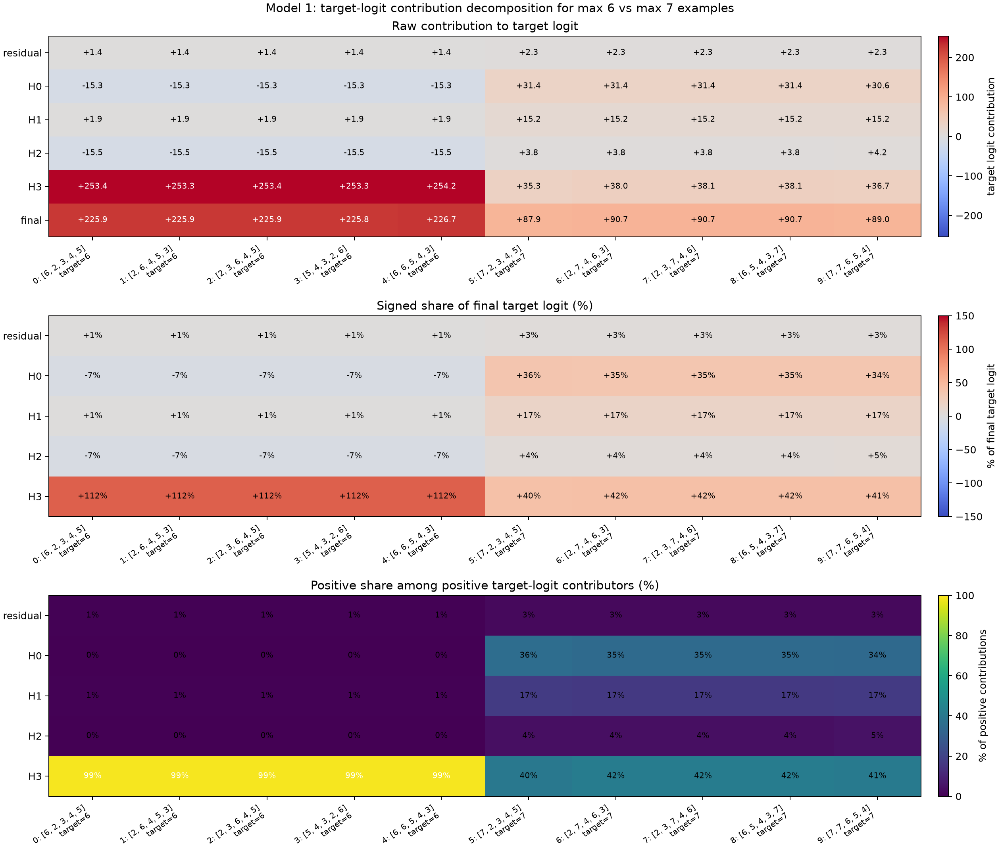
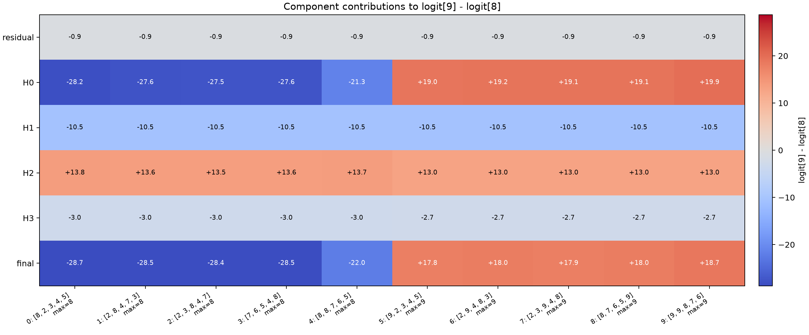
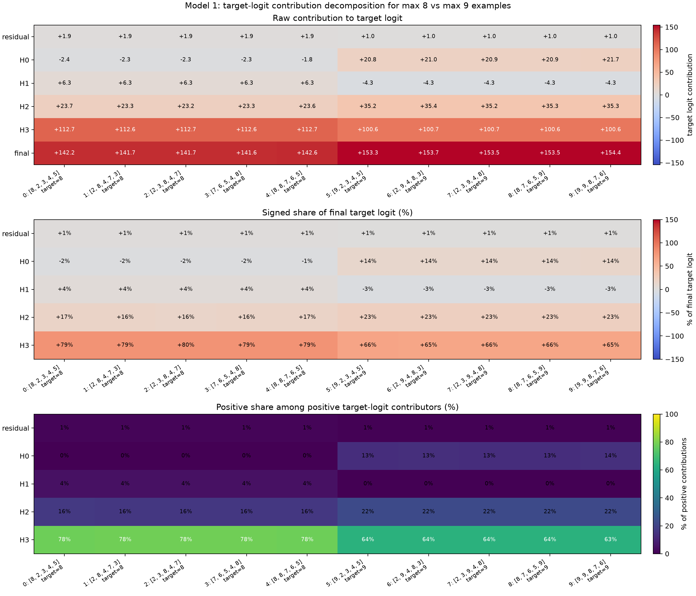
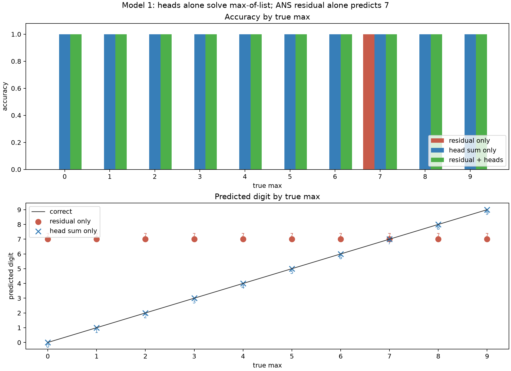
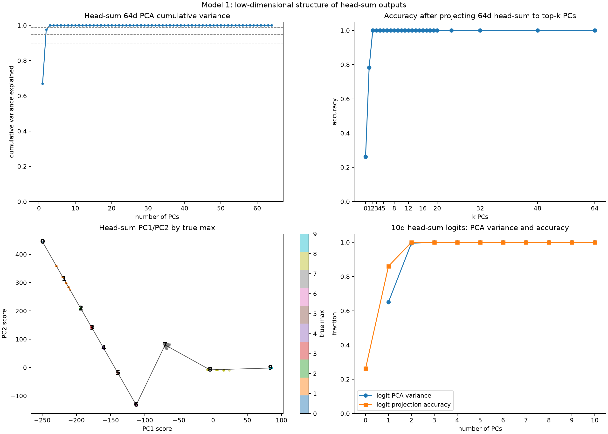
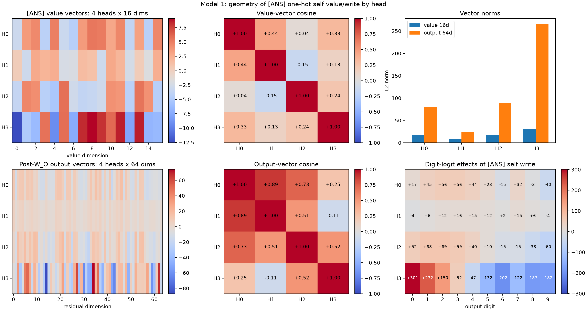
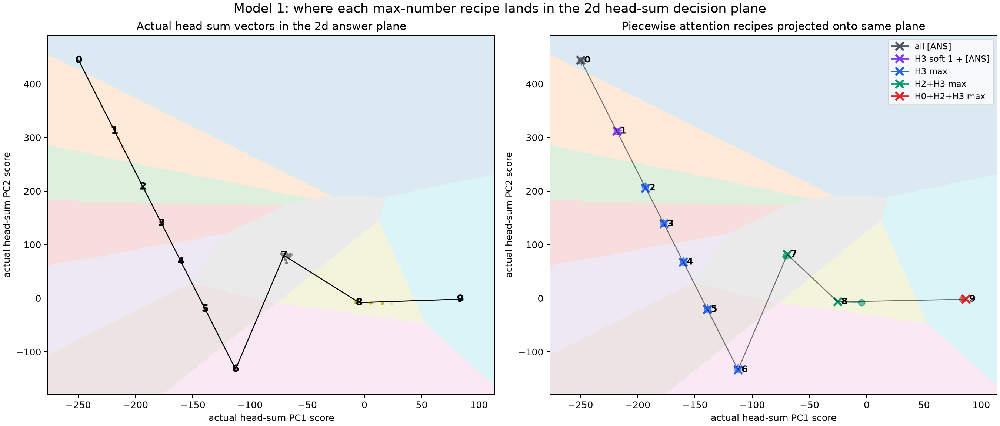

2026-07-02¶
Model 1: Target-Logit Contribution Percentages¶
Question:
For the same max-6 and max-7 examples from the previous margin
decomposition, how much does each component contribute to the correct target
logit itself?
Method:
Used the same ten fixed examples as the 7-vs-6 margin decomposition. For
max-6 examples, the target logit is logit[6]. For max-7 examples, the
target logit is logit[7].
For each example, decomposed the [ANS] residual into:
final_vec = ans_resid + H0_vec + H1_vec + H2_vec + H3_vec
Then projected each component through the number unembedding:
component_logits = component_vec @ W_U_numbers.T
target_contribution = component_logits[target]
Reported three views:
- raw additive contribution to the target logit;
- signed share of the final target logit,
component / final; - positive share among only positive contributors,
max(component, 0) / sum_positive_components.
The signed share can be negative or exceed 100% because components cancel.
The positive-share view is the cleaner percentage view for "who supplies
positive support to this target logit?"
Repro script: scripts/analysis/model1_target_logit_contribution_examples.py.
Result:

Exact values: model1_target_logit_contribution_examples.json.
Average raw target-logit contributions:
| Target logit | residual | H0 | H1 | H2 | H3 | final |
|---|---|---|---|---|---|---|
| 6 | +1.390797 | -15.299893 | +1.884123 | -15.451223 | +253.515259 | +226.039062 |
| 7 | +2.310222 | +31.202707 | +15.169775 | +3.856662 | +37.251808 | +89.791176 |
Average positive share among positive target-logit contributors:
| Target logit | residual | H0 | H1 | H2 | H3 |
|---|---|---|---|---|---|
| 6 | 0.005416 | 0.000000 | 0.007337 | 0.000000 | 0.987247 |
| 7 | 0.025733 | 0.347544 | 0.168973 | 0.042967 | 0.414783 |
Interpretation:
For max-6 examples, H3 overwhelmingly supplies the positive support for the
correct target logit. H3 contributes about 253.5 raw logit units, or 98.7%
of positive target-logit support. H0 and H2 are negative for logit[6] in
these examples.
For max-7 examples, the target-logit support is distributed:
H3: about 41.5%
H0: about 34.8%
H1: about 16.9%
H2: about 4.3%
residual: about 2.6%
This complements the margin result. H2 is recruited at max 7, but its direct
positive support for logit[7] is small in these examples. The larger shift
from predicting 6 to predicting 7 still has to be understood through
competing logits and cancellations, not through target-logit support alone.
Next step:
Run this target-logit percentage decomposition for every true max value, then pair it with true-vs-runner-up margin decompositions. That should separate "which heads support the correct logit?" from "which heads suppress the most dangerous competing logit?"
Model 1: 8-vs-9 Boundary Decomposition¶
Question:
For the top-end boundary, does H2's recruitment explain the difference between
predicting 8 and predicting 9?
Method:
Used ten fixed examples:
- five examples with true max
8; - five examples with true max
9.
For each example, decomposed the final [ANS] residual into:
final_vec = ans_resid + H0_vec + H1_vec + H2_vec + H3_vec
where each head vector includes the actual [ANS] attention row, the head's
value vectors, and that head's W_O slice:
Hh_vec = (attn_h[ANS, :] @ V_h) @ W_O_h.T
Then measured both:
margin_9v8(component) = component_logit[9] - component_logit[8]
target_contribution = component_logit[true_max]
Repro script: scripts/analysis/model1_boundary_8v9_examples.py.
Result:

Exact margin values: model1_margin_9v8_examples.json.
Average logit[9] - logit[8] margin over the five examples in each group:
| True max | residual | H0 | H1 | H2 | H3 | final |
|---|---|---|---|---|---|---|
| 8 | -0.867604 | -26.448471 | -10.546738 | +13.655060 | -3.015179 | -27.222919 |
| 9 | -0.867604 | +19.266367 | -10.546738 | +12.992563 | -2.742226 | +18.102375 |
Attention summary:
| True max | H0 top | H1 top | H2 top | H3 top |
|---|---|---|---|---|
| 8 | [ANS] |
[ANS] |
max 8 |
max 8 |
| 9 | max 9 |
[ANS] |
max 9 |
max 9 |
Target-logit support:

Exact target-logit values: model1_target_logit_contribution_8v9_examples.json.
Average raw target-logit contributions:
| Target logit | residual | H0 | H1 | H2 | H3 | final |
|---|---|---|---|---|---|---|
| 8 | +1.851185 | -2.229407 | +6.254406 | +23.409374 | +112.661865 | +141.947418 |
| 9 | +0.983581 | +21.076212 | -4.292332 | +35.276520 | +100.652390 | +153.696381 |
Average positive share among positive target-logit contributors:
| Target logit | residual | H0 | H1 | H2 | H3 |
|---|---|---|---|---|---|
| 8 | 0.012840 | 0.000000 | 0.043380 | 0.162364 | 0.781416 |
| 9 | 0.006226 | 0.133399 | 0.000000 | 0.223286 | 0.637089 |
Interpretation:
The attention-recruitment story is still correct, but it is a QK/attention
statement, not a direct logit statement. For true max 8, H2 and H3 already
attend to the max token. For true max 9, H2 and H3 continue to attend to the
max token, and H0 newly switches from [ANS] to max 9.
The 9-vs-8 margin shows that H2 is not the switch for this boundary. H2
contributes a positive logit[9] - logit[8] margin in both groups:
true max 8: H2 = +13.66
true max 9: H2 = +12.99
So H2 actually favors 9 over 8 even when the correct answer is 8. The
model still predicts 8 because H0 and H1 provide enough negative 9-vs-8
margin when H0 is attending to [ANS].
The boundary flip is mostly H0:
true max 8: H0 = -26.45 on logit[9] - logit[8]
true max 9: H0 = +19.27 on logit[9] - logit[8]
This matches the earlier QK threshold result: H0 only crosses the [ANS]
self-threshold for token 9. H0 is therefore the specialized top-end
correction that lets the model distinguish 9 from 8.
The target-logit percentages say a slightly different thing. H2 does help make
logit[9] large: it supplies about 22.3% of positive support for target
9. But it also supplies about 16.2% of positive support for target 8, and
its 9-vs-8 margin is similar in both cases. So H2 is useful support, not the
decisive boundary switch.
Next step:
Run this same paired analysis for every adjacent boundary:
1-vs-0, 2-vs-1, ..., 9-vs-8
The likely pattern is that attention thresholds tell us which heads become available, while margin decompositions tell us which recruited or self-attending heads actually decide each boundary.
Model 1: H0 Ablation Confirms The Max-9 Switch¶
Question:
If H0 is the decisive 9-vs-8 boundary head, does removing H0's contribution
make true-max-9 accuracy collapse?
Method:
Ran all 10^5 possible five-number inputs. Compared three variants:
- baseline final logits;
zero_H0_vector: remove H0's[ANS]output vector before unembedding;zero_H0_logit9_only: remove only H0's direct contribution to output digit9.
The clean mechanistic intervention is:
zero_H0_vector = ans_resid + H1_vec + H2_vec + H3_vec
The zero_H0_logit9_only variant is less mechanistic, but it tests the
literal target-logit question.
Repro script: scripts/analysis/model1_h0_ablation_max9.py.
Exact values: model1_h0_ablation_max9.json.
Result:
| Group | Count | Baseline acc | zero H0 vector acc | zero H0 logit-9-only acc |
|---|---|---|---|---|
| all inputs | 100000 | 1.000000 | 0.363110 | 0.327680 |
true max 8 |
26281 | 1.000000 | 1.000000 | 0.000000 |
true max 9 |
40951 | 1.000000 | 0.000000 | 0.000000 |
true max 9, contains 8 |
14670 | 1.000000 | 0.000000 | 0.000000 |
true max 9, no 8 |
26281 | 1.000000 | 0.000000 | 0.000000 |
For true-max-9 inputs, every H0-ablated prediction is 8:
| Group | zero H0 vector prediction distribution |
|---|---|
true max 9 |
8: 40951 |
true max 9, contains 8 |
8: 14670 |
true max 9, no 8 |
8: 26281 |
Average logit[9] - logit[8] margins:
| Group | Baseline | H0 component | zero H0 vector |
|---|---|---|---|
true max 8 |
-27.085941 | -26.416144 | -0.669796 |
true max 9 |
+18.133751 | +19.285502 | -1.151744 |
true max 9, contains 8 |
+18.116569 | +19.263502 | -1.146926 |
true max 9, no 8 |
+18.143343 | +19.297782 | -1.154433 |
Interpretation:
This confirms H0 is necessary for max-9 behavior. Removing H0's output vector
does not merely reduce confidence; it makes all 40951 / 40951 true-max-9
inputs predict 8.
The margin table explains why. For true-max-9, the baseline average
logit[9] - logit[8] margin is +18.13. H0 alone contributes +19.29.
Without H0, the average margin becomes -1.15, so 8 wins.
For true max 8, removing H0's full vector leaves accuracy intact. The
9-vs-8 margin becomes much smaller, but remains negative on every max-8
input. This is why H0 is specifically the max-9 switch, not a general
high-number-support head.
The artificial zero_H0_logit9_only intervention also produces 0% max-9
accuracy, but it should not be overinterpreted. On max-8 inputs, H0 normally
pushes against output 9; removing only that negative logit-9 contribution
also breaks max-8. The full-vector ablation is the cleaner circuit test.
Model 1: Head Sum Alone Solves The Task¶
Question:
Is the original [ANS] residual stream necessary for correctness, or do the
attention heads alone already contain the answer after their W_O projections?
Method:
Ran all 10^5 possible five-number inputs. At the [ANS] position, compared
three logit computations:
residual_only = ans_resid @ W_U_numbers.T
head_sum_only = (H0_vec + H1_vec + H2_vec + H3_vec) @ W_U_numbers.T
full = (ans_resid + H0_vec + H1_vec + H2_vec + H3_vec) @ W_U_numbers.T
where each Hh_vec is the actual head output after that head's W_O slice:
Hh_vec = (attn_h[ANS, :] @ V_h) @ W_O_h.T
Repro script: scripts/analysis/model1_residual_vs_head_sum_accuracy.py.
Result:

Exact values: model1_residual_vs_head_sum_accuracy.json.
Accuracy by true max:
| True max | Count | residual only | head sum only | full model | residual-only output | head-sum-only output |
|---|---|---|---|---|---|---|
| 0 | 1 | 0.000000 | 1.000000 | 1.000000 | 7 |
0 |
| 1 | 31 | 0.000000 | 1.000000 | 1.000000 | 7 |
1 |
| 2 | 211 | 0.000000 | 1.000000 | 1.000000 | 7 |
2 |
| 3 | 781 | 0.000000 | 1.000000 | 1.000000 | 7 |
3 |
| 4 | 2101 | 0.000000 | 1.000000 | 1.000000 | 7 |
4 |
| 5 | 4651 | 0.000000 | 1.000000 | 1.000000 | 7 |
5 |
| 6 | 9031 | 0.000000 | 1.000000 | 1.000000 | 7 |
6 |
| 7 | 15961 | 1.000000 | 1.000000 | 1.000000 | 7 |
7 |
| 8 | 26281 | 0.000000 | 1.000000 | 1.000000 | 7 |
8 |
| 9 | 40951 | 0.000000 | 1.000000 | 1.000000 | 7 |
9 |
The residual-only logits are constant across inputs:
0:-2.150847
1:-0.986216
2:-0.137806
3:+0.712118
4:+1.254116
5:+1.647622
6:+1.390797
7:+2.310222
8:+1.851185
9:+0.983581
Interpretation:
The [ANS] residual stream alone always predicts 7. It is only correct on
the true-max-7 slice. The attention heads alone are already sufficient for
perfect accuracy across all 100000 / 100000 inputs.
So the heads are not merely small corrections on top of a useful residual
answer. In this model, the answer is fully present in the summed head outputs
after W_O; the original residual stream behaves like a fixed output bias that
is added afterward.
This also justifies focusing on head-output logit decompositions:
full_logits = residual_logits + H0_logits + H1_logits + H2_logits + H3_logits
but the result here shows that:
argmax(H0_logits + H1_logits + H2_logits + H3_logits)
is already exactly correct.
Next step:
Use head-sum-only logits as the main object for the staircase mechanism summary. The residual term can still affect margins, but it is not necessary for correctness.
Model 1: Head-Sum Outputs Are Low-Dimensional¶
Question:
Does the [ANS] head-sum vector live in a low-dimensional subspace, and is
that low-dimensional projection sufficient for the actual max-of-list decision?
Method:
Collected the actual head-sum vector at [ANS] for all 10^5 inputs:
head_sum = H0_vec + H1_vec + H2_vec + H3_vec # 100000 x 64
where each head vector is after the corresponding W_O slice. Then ran PCA on
the centered 100000 x 64 matrix. For the causal test, reconstructed the
head-sum vector from only the top k PCs and unembedded:
head_sum_k = mean + project_to_top_k_pcs(head_sum - mean)
logits_k = head_sum_k @ W_U_numbers.T
Also ran the same PCA/projection test directly in the 10-dimensional
head-sum logit space.
Repro script: scripts/analysis/model1_head_sum_pca_lowdim.py.
Result:

Exact values: model1_head_sum_pca_lowdim.json.
Head-sum-only baseline accuracy:
100000 / 100000
PCA variance in 64d head-sum space:
| PC | Variance explained | Cumulative |
|---|---|---|
| 1 | 0.669577 | 0.669577 |
| 2 | 0.305588 | 0.975164 |
| 3 | 0.024836 | 1.000000 |
Number of PCs required by variance threshold:
| Threshold | PCs |
|---|---|
| 90% | 2 |
| 95% | 2 |
| 99% | 3 |
Accuracy after projecting the 64d head-sum vector to top k PCs:
| k PCs | Accuracy | Prediction summary |
|---|---|---|
| 0 | 0.262810 | all inputs predict 8 |
| 1 | 0.783630 | predicts mostly 5, 8, 9; misses low/mid classes |
| 2 | 1.000000 | exact true-max distribution |
| 3 | 1.000000 | exact true-max distribution |
PCA variance in 10d head-sum logit space:
| PC | Variance explained | Cumulative |
|---|---|---|
| 1 | 0.651377 | 0.651377 |
| 2 | 0.343516 | 0.994894 |
| 3 | 0.005106 | 1.000000 |
Accuracy after projecting the 10d head-sum logits to top k PCs:
| k PCs | Accuracy |
|---|---|
| 0 | 0.262810 |
| 1 | 0.860750 |
| 2 | 1.000000 |
Interpretation:
The head-sum computation is extremely low-dimensional. In 64d residual space,
three PCs explain essentially all variance, and two PCs already preserve
100% decision accuracy after reconstruction and unembedding.
The logit-space result is even sharper: two logit PCs explain 99.49% of
variance and preserve 100% accuracy. This means the output decision lies on a
2d decision surface, even though the vectors live in 64d.
The PC1/PC2 plot shows a structured trajectory by true max. Max values 0..6
lie along one curved branch, 7 bends away, and 8/9 occupy the top-end
branch. This matches the staircase mechanism:
H3 broad pathway for 2..6,
H2 joins for 7/8,
H0 joins for 9.
Important caveat:
The third 64d PC contains real variance, about 2.48%, but it is not needed
for the final argmax decision. So the representation is not literally rank-2 in
64d, but the decision-relevant subspace is already captured by two PCs.
Next step:
Interpret the two decision PCs by projecting each source-specific head write onto them:
Hh@[ANS], Hh@0, Hh@1, ..., Hh@9
That should show which head/source writes move the representation along the low/mid branch versus the 7/8/9 branch.
Model 1: ANS Self-Write Value Geometry¶
Question:
When a head's [ANS] query attends one-hot to [ANS] itself, what value vector
does that head read, and what does that value become after the head's W_O
slice?
Method:
Used the actual [ANS] residual at position 10:
source = E[ANS] + P[10] # 1 x 64
value_h = source @ W_V_h.T # 1 x 16
output_h = value_h @ W_O_h.T # 1 x 64
digit_effect_h = output_h @ W_U_numbers.T # 1 x 10
This is the exact vector a head writes at [ANS] if its [ANS] attention row
is one-hot on the [ANS] source position.
Repro script: scripts/analysis/model1_ans_self_value_geometry.py.
Result:

Exact values: model1_ans_self_value_geometry.json.
Vector norms:
| Head | value_h norm, 16d |
output_h norm, 64d |
output digit argmax |
|---|---|---|---|
| H0 | 16.622002 | 79.300797 | 3 |
| H1 | 8.701168 | 24.628391 | 3 |
| H2 | 16.963669 | 89.185280 | 2 |
| H3 | 31.101879 | 264.866333 | 0 |
Pairwise cosine in 16d value space:
| H0 | H1 | H2 | H3 | |
|---|---|---|---|---|
| H0 | +1.000000 | +0.442091 | +0.040500 | +0.327411 |
| H1 | +0.442091 | +1.000000 | -0.145974 | +0.134436 |
| H2 | +0.040500 | -0.145974 | +1.000000 | +0.238202 |
| H3 | +0.327411 | +0.134436 | +0.238202 | +1.000000 |
Pairwise cosine after W_O in 64d output space:
| H0 | H1 | H2 | H3 | |
|---|---|---|---|---|
| H0 | +1.000000 | +0.885531 | +0.733549 | +0.249573 |
| H1 | +0.885531 | +1.000000 | +0.514098 | -0.107768 |
| H2 | +0.733549 | +0.514098 | +1.000000 | +0.523191 |
| H3 | +0.249573 | -0.107768 | +0.523191 | +1.000000 |
SVD energy fractions:
| Space | PC1 / SV1 | PC2 / SV2 | PC3 / SV3 | PC4 / SV4 |
|---|---|---|---|---|
| 16d value vectors | 0.640822 | 0.178705 | 0.146490 | 0.033983 |
| 64d output vectors | 0.859787 | 0.120264 | 0.019303 | 0.000647 |
Digit-logit effects of each [ANS] self-write:
| Head | 0 | 1 | 2 | 3 | 4 | 5 | 6 | 7 | 8 | 9 |
|---|---|---|---|---|---|---|---|---|---|---|
| H0 | +17.117685 | +44.990227 | +55.954155 | +56.224960 | +43.577084 | +22.576611 | -15.299953 | +32.183006 | -3.139061 | -39.907715 |
| H1 | -3.984296 | +6.460329 | +12.232366 | +15.886344 | +14.781888 | +11.544221 | +1.884123 | +15.169775 | +6.254405 | -4.292332 |
| H2 | +51.795769 | +68.296684 | +69.260735 | +59.108902 | +40.038624 | +9.623316 | -15.468858 | -14.828217 | -37.625561 | -59.739128 |
| H3 | +300.723114 | +232.201004 | +149.667404 | +51.884739 | -46.856102 | -131.714066 | -202.404846 | -121.776932 | -186.841965 | -181.822571 |
Interpretation:
The 16d [ANS] value vectors are not all pointing in the same direction.
H0/H1 are moderately aligned, H0/H2 are nearly orthogonal, and H1/H2 are
slightly opposed. H3 has the largest value norm, but it is only weakly to
moderately aligned with the other heads.
After W_O, the geometry becomes much more structured. The four 64d
self-write vectors are close to low-rank: the first singular direction accounts
for about 86.0% of the energy, and the first two account for about 98.0%.
H0, H1, and H2 become fairly aligned after W_O, especially H0/H1 and H0/H2.
The digit-logit effects explain several earlier interventions:
- H3's
[ANS]self-write is a huge low-number feature, with strongest effect on output0. This explains why H3 attending to[ANS]is sufficient for the max-0case. - H2's
[ANS]self-write strongly pushes0, 1, 2, 3and suppresses high digits. This explains why forcing H2 to[ANS]in max-7or max-8cases is catastrophic: it injects a low/mid-number write. - H0's
[ANS]self-write strongly favors7over6(+32.18 - (-15.30)). This explains why H0 can help the7-vs-6boundary while still attending to[ANS], not to the token7.
So [ANS] self-attention is not a neutral no-op. Each head's [ANS] value,
after that head's W_O, writes a specific digit-logit feature.
Next step:
Make the analogous source-token table for 0..9 per head:
((E[token] + P[pos]) @ W_V_h.T) @ W_O_h.T @ W_U_numbers.T
This should let us compare the [ANS] self-write features against the max-token
read features in the same logit-effect basis.
Model 1: Piecewise Attention Recipes In The 2D Answer Plane¶
Question:
Given the piecewise attention abstraction,
max 0: H0/H1/H2/H3 -> [ANS]
max 1: H0/H1/H2 -> [ANS], H3 uses its actual soft [ANS]+1 mixture
max 2-6: H0/H1/H2 -> [ANS], H3 -> max token
max 7-8: H0/H1 -> [ANS], H2/H3 -> max token
max 9: H1 -> [ANS], H0/H2/H3 -> max token
where does each max-number recipe land in the 2D head-sum PCA plane?
Method:
Fit PCA on the actual head-sum output at [ANS] for all 100000 inputs:
head_sum = H0_vec + H1_vec + H2_vec + H3_vec # 100000 x 64
Each Hh_vec is after that head's W_O slice. No original residual stream was
added.
Then, for every input, constructed the piecewise scheme above using the same
source choices as the full one-hot abstraction. For max-read heads, the source
position is the max-token position that the actual head most attends to among
max-valued positions. For true max 1, H3 keeps its actual soft value mixture.
Both actual and scheme vectors were projected into the same actual PCA basis:
pc_scores = (head_sum - actual_mean) @ actual_PC_directions.T
The background colors in the plot are the digit predicted by unembedding from that 2D plane:
reconstructed = actual_mean + pc1 * PC1 + pc2 * PC2
digit_logits = reconstructed @ W_U_numbers.T
Repro script:
scripts/analysis/model1_piecewise_scheme_pca_projection.py.
Result:

Exact values: model1_piecewise_scheme_pca_projection.json.
Accuracy checks:
| Vector set | Accuracy |
|---|---|
| actual head-sum only | 1.000000 |
| piecewise scheme head-sum only | 1.000000 |
| actual head-sum reconstructed from top 2 PCs | 1.000000 |
| piecewise scheme reconstructed from top 2 PCs | 1.000000 |
Centroids in the actual PC1/PC2 basis:
| True max | Actual PC1 | Actual PC2 | Scheme PC1 | Scheme PC2 | Recipe |
|---|---|---|---|---|---|
| 0 | -249.471344 | +443.605560 | -249.594742 | +444.125916 | all [ANS] |
| 1 | -218.129730 | +311.598358 | -218.131042 | +311.598785 | H3 soft 1 + [ANS] |
| 2 | -193.429108 | +207.714813 | -192.946121 | +205.559555 | H3 max |
| 3 | -177.224716 | +139.745041 | -177.043274 | +138.728577 | H3 max |
| 4 | -160.208328 | +68.230652 | -160.052551 | +67.274979 | H3 max |
| 5 | -139.156952 | -20.298115 | -139.007660 | -21.212927 | H3 max |
| 6 | -112.546837 | -132.379837 | -112.335365 | -133.496796 | H3 max |
| 7 | -70.268845 | +79.736465 | -69.304085 | +81.395790 | H2+H3 max |
| 8 | -4.590448 | -8.223660 | -25.141771 | -6.878398 | H2+H3 max |
| 9 | +83.726097 | -1.783674 | +86.631805 | -1.980802 | H0+H2+H3 max |
Interpretation:
The 2D picture makes the staircase mechanism visible.
The 0..6 outputs lie on one low/mid branch. Within that branch, H3 moving
from [ANS] or soft-1 to max-token reads moves the point down through the
digit regions 2, 3, 4, 5, 6.
At 7, H2 joins H3 in reading the max token. This does not merely continue the
0..6 curve; it bends the representation into a different region of the 2D
plane.
At 8, the point moves along that high-number branch. The piecewise scheme
centroid is left of the actual centroid, mostly because the actual model has
some non-one-hot nuance such as partial H0 max attention, but it remains in the
same unembedding decision cell and keeps 100% accuracy.
At 9, H0 also reads the max token. That pushes the point sharply right into
the 9 decision region, matching the previous H0 max-9 causal result.
So the heads are writing a 64d vector, but their answer-relevant sum is moving through a small number of routes in a 2D decision plane:
0/1: [ANS] and soft-H3 baseline
2..6: H3 max-read branch
7/8: H2 + H3 high-number branch
9: H0 + H2 + H3 top-end branch
Next step:
Project the per-head deltas into this same plane:
H0@9 - H0@[ANS]
H2@7 - H2@[ANS]
H2@8 - H2@[ANS]
H3@d - H3@[ANS]
That should identify which head writes move the representation along PC1 versus PC2.